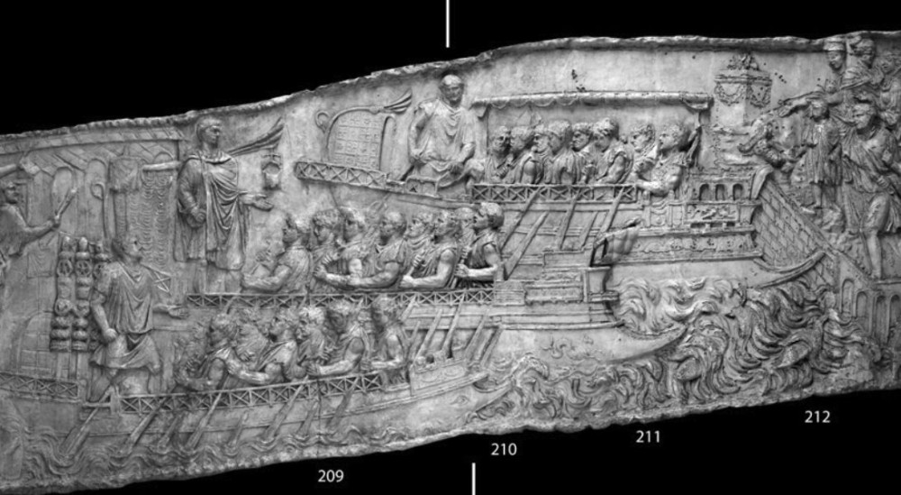
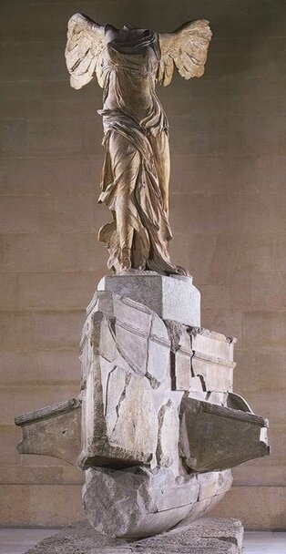
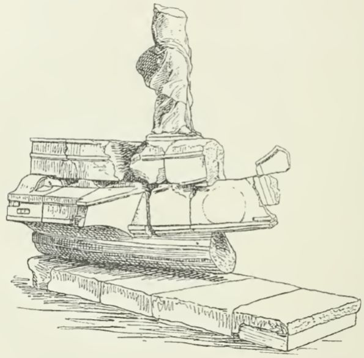
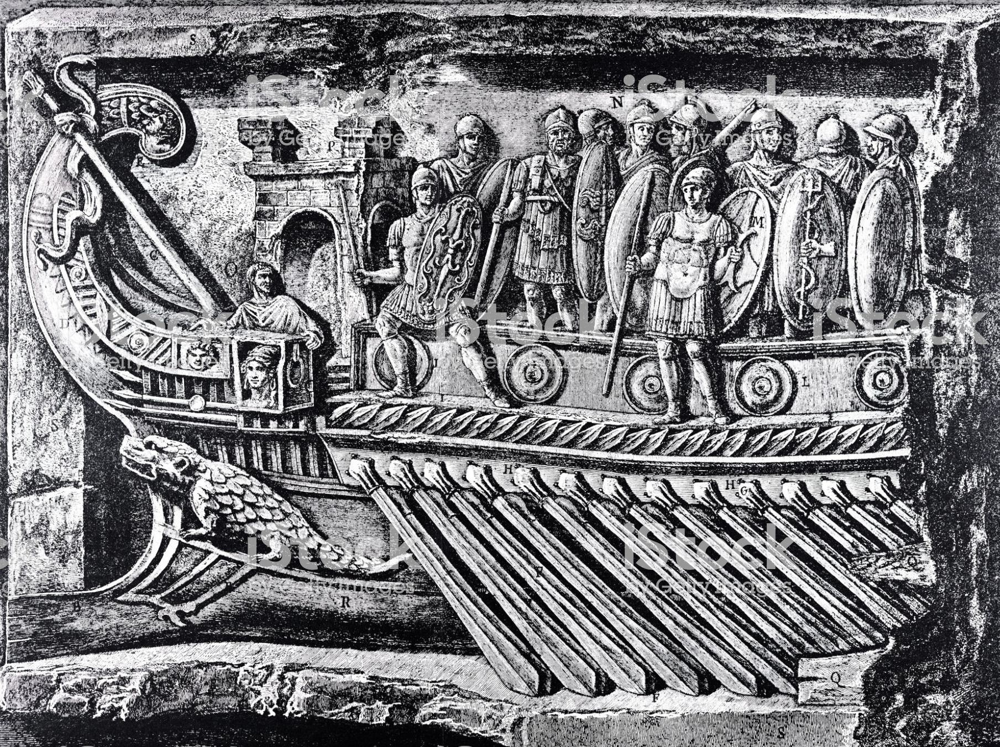
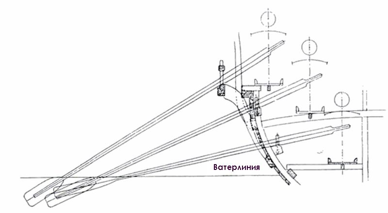

После того, как в предыдущем рассказе мы обрисовали время и место первого появления греческих триер, перейдем к изучению конкретных характеристик этих кораблей.
Как уже отмечалось, круг наших знаний о триерах существенно расширился после исследования сохранившихся фрагментов крытых эллингов IV века до н.э. Помимо верхних границ для основных размерений триеры, полученных из анализа размеров эллингов, исследователям удалось обнаружить и прочитать найденные поблизости фрагменты надписей на мраморных досках, относящихся к кораблестроительным и иным вопросам деятельности этих верфей. Особое место среди них занимает опубликованная М.Джеймсоном в 1960 г. так называемая Трезенская надпись со заменитым Декретом Фемистокла от 480 г. до н.э., т.е. во времена нашествия Ксеркса на Элладу. Надпись датируется IV веком до н.э., поэтому имеют право на существование предположения, что это поздний фальсификат, как, впрочем, не лишены оснований и утверждения, что составители надписи опирались на подлинный текст декрета Фемистокла.
Найденные археологами надписи, инвентарные списки и реестры, при сопоставлении их с известными ранее литературными источниками, позволили яснее представить устройство афинской триеры, хотя мы до сих пор не можем найти окончательный ответ на главный, пожалуй, вопрос: как размещались гребцы на триере. Мы обязательно обсудим этот вопрос, но прежде познакомимся с двумя важнейшими элементами устройства триеры: постицей и рулевыми веслами.

Римские либурны. Фрагмент барельефа с Траянской колонны
К теме постицы мы обращались неоднократно, рассматривая ее эволюцию на разных этапах становления военного гребного корабля – галеры. Если присутствие постицы на галерах позднего Средневековья и эпохи Возрождения сомнений не вызывает, достаточно хорошо отдокументировано и проработано, то наличие «ящика для гребцов» на античных кораблях стали обсуждать совсем недавно. В трехтомном иллюстрированном словаре-справочнике немецкого антиковеда Карла Августа Баумейстера (1830–1922), посвященном памятникам классической древности (Denkmäler des classischen Altertums. 1885—88.) была помещена статья Эрнста Ассманна Seewesen. Seefahrt, Seehandel, Seekrieg («Морское дело: мореплавание, морская торговля, война на море»). Ассманн, по основной профессии врач, участник франко-прусской войны 1870 года, практиковавший также на немецких военных кораблях, увлекся археологией, написал несколько серьезных работ по морской истории античности. В упомянутой выше статье он выдвинул гипотезу, что уже на древнегреческих гребных кораблях существовала конструкция, аналогичная постице на галерах эпохи Возрождения, для обозначения которой греки использовали термин παρεξειρεσία [parexeiresia]. Интересен подход, который Ассманн использует в популярной, в общем-то, статье для того, чтобы ввести новое научное понятие.
Pompejanische Gemälde nebst der Trajanssäule bezeugen das Vorhandensein einer offenen, schräg gegitterten Reling auf römischen Fahrzeugen ; die Winkel dieses Geländers wurden öfters als Dullen oder Pforten der obersten Riemen benutzt, eine auffällige, vielleicht nicht gerade vorteilhafte Einrichtung. Die äufsere Schiffswand fällt entweder vom Bord schlicht und nahezu senkrecht zum Wasserspiegel herab oder sie trägt auf etwa halber Höhe einen langgestreckten, kastenartigen Ausbau, welchen man dem Klaviaturteil eines Pianino vergleichen könnte. Dieser Ausbau — nennen wir ihn in Erinnerung an die Radkasten der Dampfer den Riemenkasten — ist der Vorläufer der mittelalterlichen apostis und der heutigen Auslegerdullen, outrigger, er ermöglicht längere, wirksamere Riemen bei unveränderter Schiffsbreite in der Wasserlinie, sowie das Aufsetzen weiterer Ränge im Hochpolyerensystem.
На фресках Помпеи и барельефах Траянской колонны с изображениями римских кораблей можно обнаружить ограждения, забранные косой обрешеткой. Выступающие части этого ограждения образуют необычное устройство, которое используется для размещения уключин и весельных портов самого верхнего ряда весел. Внешняя сторона его либо почти отвесно спускается вниз, либо на средней части своей высоты образует некое подобие ящика, удлиненный выступ, напоминающий штульраму, которая поддерживает клавиатуру пианино. Назовем этот выступ Riemenkasten («весельный ящик»), по аналогии с «колесным ящиком» парохода (die Radkasten der Dampfer – кожух у колеса колесного парохода – g._g.); он очень напоминает средневековый апостис или нынешний аутригер (Auslegerdullen, выносные уключины); устройство позволяет использовать более длинные и эффективные весла без изменения ширины корабля по ватерлинии, а также применять дополнительные ряды гребцов в системах гребли с несколькими ярусами весел по высоте (Hochpolyerensystem).
Ernst Assmann (1887). Seewesen. Denkmäler des classischen Altertums. стр. 1608
Вот несколько других изображений, которые могли натолкнуть Ассманна на его гипотезу.

Ника Самофракийская

Ника Самофракийская, рисунок

Римская бирема
На первый взгляд в приведенных словах нет ничего необычного: мало ли подобных гипотез выдвигается в научной литературе, посвященной морской истории античности. Между тем, признанный авторитет в морском антиковедении сэр Уильям Вудторп Тарн, член Британской академии (а по совместительству, как это принято у англичан, сотрудник английских спецслужб) так оценил эти строки Ассманна:
The Greek term for this outrigger is παρεξειρεσία;The meaning of the word was Assmann's discovery … and is the most illuminating thing discovered in modern times about these warships...
Греческий термин для постицы – παρεξειρεσία. Значение этого слова было открытием Ассманна… это наиболее блистательное открытие современности, касающееся этих военных кораблей.
Tarn, W. W. (1930) . Helenistic Military and Naval Developments, p.125
Что же такого необычного сделал немецкий ученый? Ведь термин parexeiresia был хорошо известен и до работы Ассманна, он трижды встречается в Истории Фукидида, упоминается другими древними авторами. Но если мы посмотрим внимательнее, то во всех схолиях к Фукидиду, и во всех словарях, включая Лидделла-Скотта, до появления работы Ассманна этот термин трактовался как «оконечность корабля (на носу или на корме, незанятая гребцами)» (это буквальная цитата из словаря Дворецкого. Заметим, что если словарь Лидделла и Скотта изменил словарную статью παρεξειρεσία , добавив в нее значение, данное Ассманом, то словарь Дворецкого информирует своих читателей так же, как он делал это в 1958 году, не включая значение «постица».)
Приведем наглядный пример того, к чему это приводит.
В 1953 году вышел перевод на русский язык сочинения византийского поэта и историка Агафия Миринейского (536—582) О царствовании Юстиниана в (Переводчик М.В. Левченко; переиздано в 1996 г.). Для нас в этой работе интерес представляет описадние изготовления гуннами плотов, обладающих мореходными качествами. Вот этот отрывок:
Когда в это время гунны осаждали и беспокоили Херсонес, этот юноша неустанно работал над отражением их нападений и изобретал всякие способы для отражения врага. И сам он по своим природным способностям очень удачно находил полезное и очень легко внимая совету находящихся при нем испытанных в боях воинов, подсказывающих ему то, что нужно было делать. Когда у варваров уже ничего не оставалось, чтобы они могли предпринять как для осады, так и для штурма стен, они решили испытать еще один способ - смелый, безрассудный, полный опасности, и, таким образом, или быстрее овладеть местностью, или же отказаться от дальнейших попыток и возвратиться к своим. Они собрали огромное количество тростника, самого длинного, крепкого и широкого и, окропив стебли и увязав их веревками и шерстью, изготовили множество плотов. Сверху поперек они наложили прямые деревянные бревна, как скамьи для гребцов, но не везде, а только по краям и по середине. Скрепив их самыми крепкими узлами, они соединили и связали между собой как можно прочнее так, чтобы три или четыре образовали один плот, имеющий достаточное пространство для помещения четырех гребцов, и чтобы они способны были выдержать тяжесть помещенного там груза и не затонули вследствие недостаточной величины. Таким образом они построили не менее 150 плотов. Чтобы увеличить их плавучесть, передние их части немного округлили и загнули назад наподобие носа, и, подражая бортам корабля и парапетам, они приладили с каждой стороны колки для весел и устроили нечто вроде передней и задней частей корабля, где не было весел и скамеек для гребцов.
Агафий Миринейский. О царствовании Юстиниана / Пер. Левченко М.В. - М.: Арктос - Вика-пресс, 1996
Приведу цитату из подлинника, относящуюся к подчеркнутым мною словам в переводе:
κωπητῆρας ἐφ’ ἑκατέρα πλευρᾷ καὶ οἶον παρεξειρεσίας αὐτομάτους ἐμηχανήσαντο
На самом деле, как мы отсюда видим, "нечто", устроенное гуннами, была постица, или аутригер.
У меня нет намерения осуждать Митрофана Васильевича – он работал над переводом во время войны, когда не было доступа к зарубежной литературе и источникам и, скорее всего, пользовался ранними изданиями Лидделла-Скотта либо словарем А.Д. Вейсмана (1899), где для термина παρεξειρεσία приведено аналогичное определение: «передняя и задняя часть корабля, где не было весел или скамеек для гребцов». Я просто не могу понять, почему, делая переиздание книги, издатели не снабдили ее хотя бы краткими примечаниями.
Сторонники трехярусного размещения гребцов на афинской триере незамедлительно взяли на вооружение открытие Ассманна. К двум ярусам весел, которыми снабжались предшественники триер – двухъярусные пентеконторы, биремы, проходящих через весельные порты в борту корабля и поверх планширя, теперь легко можно было добавить третий ярус весел, проходящих через постицу, которые в данном случае могли быть сделаны равными по длине с веслами двух нижних ярусов.

Триера
А это выбивало из рук противнииков многоярусного размещения гребцов основной козырь: невозможность поддерживать одинаковый темп гребли гребцами разных уровней по причине разницы в длине их весел. Обсудим это в следующий раз.